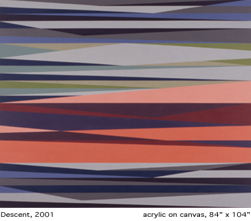

In
his essays, "Six Memos for the Next Millennium,' Italo Calvino
distilled five characteristics whose qualities he considered the most
difficult for the creative imagination to achieve: lightness, quickness,
exactitude, visibility, and multiplicity. These attributes are now hallmarks
of the world of cyberspace, the everyday virtual worlds of the cool
blue screen. The weight of the world, its opacfty, is transformed into
a weightless, abstract visual lightness that has acquired emblematic
value. By recognizing and playing upon the paradoxical nature of virtual
reality's transmutations, Odili Donald Odita embeds in the materiality
of painting a sense of the oscillating, interwoven spaces and narratives
moving at light-fling speed through cyberspace.
Odita, born in Nigeria and raised in Ohio, integrates many different
idioms, drawing from art history, digital technology, traditional African
art, contemporary discourse, and personal narrative. His recent concurrent
exhibitions at Florence Lynch Gallery, featuring intimately scaled paintings
and drawings, and at Riva Gallery, featuring large scale paintings and
mixed media installations, evince a nuanced and sensuous abstract pictorial
language and an ability to move fluidly between perceptual and conceptual
concerns, discursive spaces and visceral responses.
The aesthetic impact of Odita's outsized (80 x 104 inches) acrylic paintings
at Riva Gallery was one of being surrounded by sheer beauty and luminous
effervescence. Meticulously structured and multi-tiered horizontal zigzagging
planes pulsate in syncopated rhythms across the canvas, edging toward
extending outward into space. Odita deploys sophisticated formal means
to suggest a liminal dimension between states, a phase transition, precipitously
sliding toward vibration. An incipient illusionism taps into elusive
references that appear to float on a wei9htless planar translucency.

"Descent' (2001) merges cool, low key blue and green scissoring
planes with sandwiched layers of warm, high key oranges, reds, and pinks.
Sliced pyramidal forms are mirrored by shadowed inversions and overlaps,
illusionistic in their optical play, animating a surface skin which
cannot be contained by a gestalt experience. While the destabilization
of perception by Color Field painting and Op art are referenced by Odita,
his intuitive abstraction is multivalent, infiltrated by suggestions
of landscape terrain or atmosphere, flickering computer or T.V. screens,
textile traditions or fragmented architectonic spaces. Informed by the
circulation of Euro-American modernism and its attendant appropriation
of African cultural influences, paintings such as "Horizon' (2001)
and 'Over Here, Over There' (2001) are redolent not with a fashionable
irony but with a vital sense of an emerging vernacular which engages
memory, loss, hope and the possibility of creating new idioms from a
genuine cultural pluralism.
Odita's expansive paintings affect the nature of the viewer's bodily
experience of space and form via subtly crafted color modulations and
dynamics of tone, evoking a kind of synesthetic experience akin to "seeing'
music. Jazz and, in particular, the music of Miles Davis are never far
from Odita's frame of references. He structures visual fugue-like compositions:
layers of rhythmically repeated but slyly variant voices, a complex
polyphony with a dissonant edge, containing contiguities and variations
on a theme.
Interspersed with the paintings, Odita's three concise mixed media installations,
"Family Tree,' 'Heaven Can Wait,' and 'Half Way,' engage discursive
and conceptual issues raised by his transatiantic American and African
experiences. The artist's father is an art historian, painter and professor,
and thus, Odita grew up surrounded by art books and art conversation,
the ongoing processes of painting and his father's collection of African
artifacts. His parents imparted their heritage of a living lgbo culture
in its specificity, dovetailed with commonalities within a larger African
cultural framework. The
related installations grew from a period (1994-1997) when Odita had
stopped painting to focus on conceptual mixed media work. More recently,
these installations have become highly metaphoric: lyric condensations
of experiences, clues and fragments, slices of the familiar made strange.
"Family Tree' employs an enlarged Warholian film-strip format to
vertically juxtapose burnished black-and-red images of ceremonial masks
from the artist's ethnic heritage paired with documentary style, dose-up
photo-portraits of individuals. This doubling strategy developed during
his recent travels in Nigeria, when Odita was struck by the uncanny
similarity of facial features between certain ceremonial masks and passersby
living in areas where the masks were made. The artist critically recontextualizes
the standard art history "visual comparison" methodology (double
slide carousel presentations) with modernist notions of African masks
as anonymous, depersonalized and stylzed aesthetic objects. Odita inverts
these conventions by offering a personalized "Family Tree' of masks
which clearly portray individuals from the community. His inversion
inheres an elegiac pitch to the photo-based project.
The directness and spontaneity of the smaller drawings on paper and
paintings featured at Florence Lynch Gallery disclose emotions and felt
experience of a personal and political nature brought dose to the surface.
In his figurative and gestural charcoal and tempera works, such as "Boy'
(2001), 'Soldier' (2001) or 'Burning' 2001, the artist's intellectualization
and conceptual distance are kept at a minimum, deferring to contingent
and immediately expressive means. The Nok Figures #1, #2, and #3 are
a face-off to the genre of Western portraiture as it relates to African
masks used as invigorating modernist tools by Picasso, Matisse, and
the German Expressionists. These figurative works on paper have a spare
sophistication of form and technique which carry an emotional weight
and a sense of vulnerability or precariousness.
Odita's work in various media consistently display a precise presence
and invoke the poetic or lyric mode. That is to say, he is concerned
with the metaphysical dimensions of the concrete world. The transcendent
as well as the virtual figure in his work, as does the power of beauty.
�
Deborah Frizzell & NY Arts Magazine |